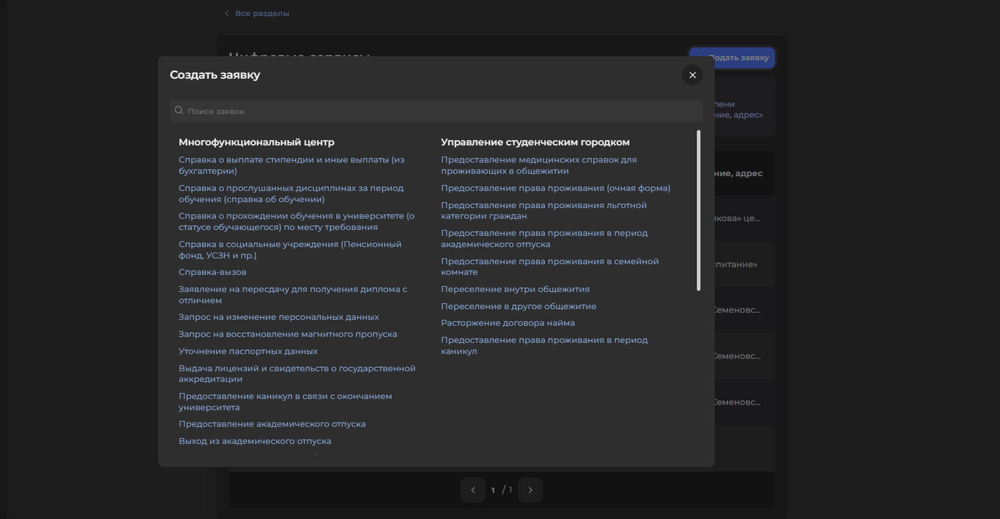

Новости о прогрессе разработки
В Московсокм Политехе внедрена новая функция расписания в личном кабинете студента
В рамках нашего проекта по созданию личного кабинета студента, все обучающиеся МосПолитеха получили новую удобную функцию - автоматическое обновление и формирование расписания занятий прямо в личном кабинете! Теперь каждый студент может с легкостью отслеживать изменения в графике занятий, сессии, не ожидая уведомлений от преподавателя.
Эта новинка особенно важна для наших первокурсников, так как очень часто именно трудности с пониманием структуры расписания
создают первые сложности для адаптации в новой среде.

Новая функция оформления справок онлайн появилась в МосПолитехе
Обучающиеся МосПолитеха получили новую удобную функцию - оформление любых необходимых справок прямо в личном кабинете! Справку можно получить в электронном или в бумажном виде. Данное нововведение было реализовано в рамках проекта по созданию личного кабинета студента Московского Политеха.
Данная функция позволяет получить различные справки, например: справку об обучении, рекомендации для дальнейшего обучения или трудоустройства, справку о сдаче экзаменов и зачетов.
Кроме упрощенного процесса оформления заяки на получение справки, студенты могут отслеживать статус всоих обращений, оставаясь в курсе статуса готовности документа 
Студенты МосПолитеха получили возможность легкого поиска вакансий, практик и стажировок!
Студентам Московского Политеха больше не придется тратить много времени на поиск вакансий и предложений о прохождении производственной практики или стажировки. Нововведение, реализованное в рамках проекта по созданию личного кабинета студента МосПолитеха, интегрировало единую базу партнерских компаний и предприятий, предлагающих вакансии и стажировочные позиции специально для студентов МПУ.
Эта новинка решает одну из главных проблем студентов - отсутствие удобной площадки для подбора интересных стажировок и
производственных практик. Нововведени позволяет не только сократить временные затраты студентов на поиск подходящего предложения,
но и заметно улучшает показатели трудоустраиваемости выпускников.